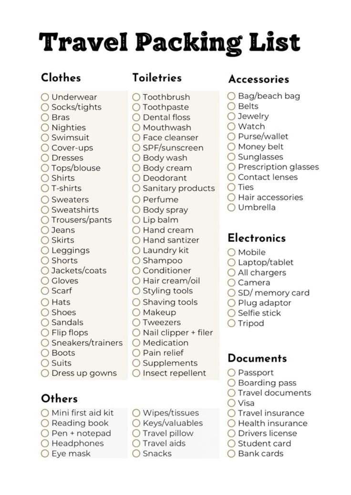

Packing Tips for Traveling to South America
Essential Packing Tips
Before embarking on your exciting trip to South America, here are some key packing tips to ensure you're well-prepared for your journey!
- Light Luggage: Opt for a lightweight suitcase or backpack for ease of travel. You'll want to move quickly, especially in airports and buses.
- Pack for Varying Weather: South America has diverse climates. Bring layers, including a warm jacket for cooler regions and breathable clothes for warmer areas.
- Comfortable Footwear: Make sure to pack comfortable shoes for long walks, hikes, and sightseeing. Don't forget flip-flops for the beach!
- Electronics: A universal adapter is crucial, as plug types vary across countries. Be sure to bring a portable charger as well.
- Important Documents: Always have a copy of your passport, travel insurance, and any required visas.
Important Things to Know About Weight Restrictions on Planes
Airlines in South America often have different baggage policies compared to international flights, so here’s what you need to know:
- Checked Baggage: Typically, airlines allow 23 kg (50 lbs) of checked luggage. Make sure to check with your airline before departure, as weight limits may vary.
- Carry-On Limit: Your carry-on bag should not exceed 10 kg (22 lbs) for most airlines, but again, it’s essential to confirm with the airline.
- Excess Baggage Fees: Be aware of potential excess baggage fees, which can be costly. If you're planning to buy souvenirs, try to save room in your suitcase!
- Tips for Packing Light: Roll your clothes to save space, and use packing cubes to stay organized. Stick to versatile pieces that can be mixed and matched!

{kind=link}